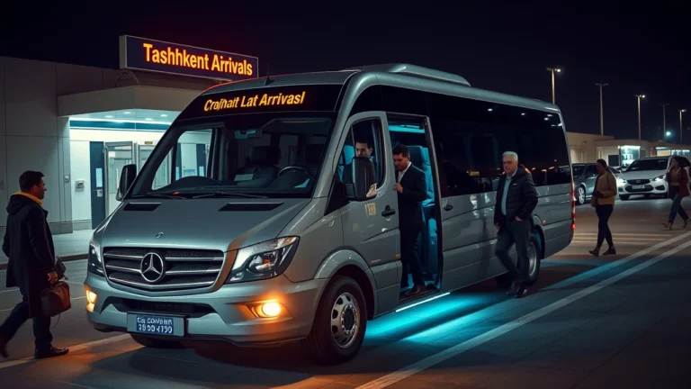
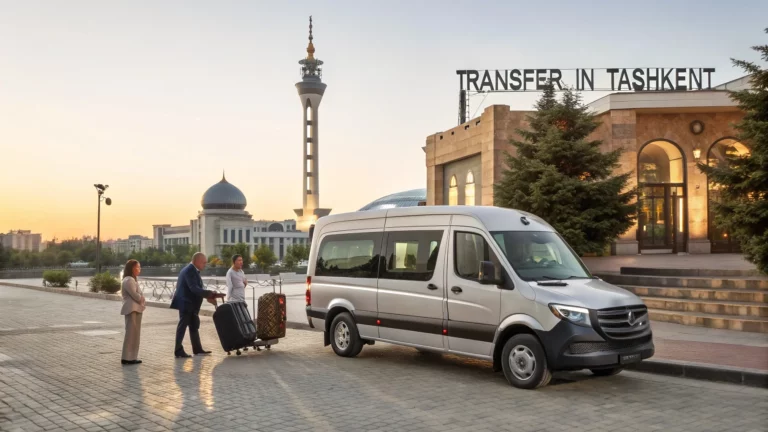

Трансфер в аэропорту Ташкента
Трансфер в аэропорту Ташкента – это первое, о чем стоит подумать, планируя поездку в столицу Узбекистана. Широкий выбор аренды микроавтобусов
СтатьяЧитать
Полезные статьи об аренде минивэнов, трансферах, маршрутах по Ташкенту и поездках по Узбекистану.

Трансфер в аэропорту Ташкента – это первое, о чем стоит подумать, планируя поездку в столицу Узбекистана. Широкий выбор аренды микроавтобусов
Трансфер в Ташкенте из аэропорта — первый шаг на пути к комфортному и увлекательному путешествию. Начните своё приключение правильно

Трансфер в Ташкенте, первый шаг к комфортному путешествию, деловой встрече и экскурсии по одному из самых гостеприимных городов Средней Азии.
Трансфер в Ташкенте — это то, что поможет вам начать свое путешествие или деловую поездку без лишнего стресса.

Транспорт для путешествий — это один из ключевых факторов, который может значительно повлиять на комфорт и успешность поездки.
Транспортные услуги — важный аспект любого путешествия. Предоставляем услуги аренды микроавтобусов для туристов.

Тур Ташкент-Самарканд — это маршрут, который открывает перед путешественниками богатейшую историю и культуру Узбекистана.

Туристический автобус — это не просто средство передвижения, это ваш ключ к увлекательному и комфортному путешествию по Узбекистану.

Трансфер из Самарканда в Ташкент — одно из самых популярных направлений, которое ежедневно выбирают туристы и корпоративные клиенты.

Выбор микроавтобуса для экскурсий, один из тех пунктов, от которого зависит, будет ли ваша поездка комфортной, безопасной и запоминающейся.

Заказать микроавтобус в аренду в Ташкенте вы можете в нашей компании — это удобное и выгодное решение для туристических и деловых поездок

Заказать микроавтобус с водителем: разберём, какой класс нужен, что входит, как фиксируется цена, ожидание рейса, багаж и детские кресла.